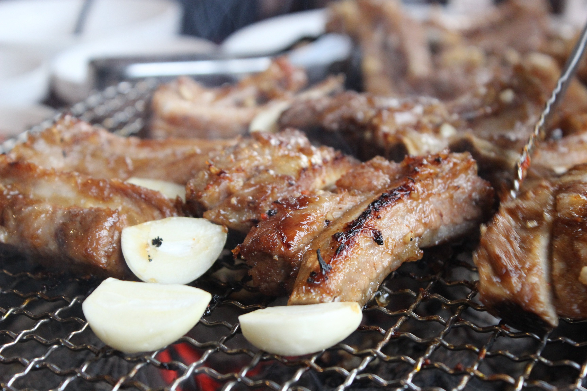

1. Sam-Gyeob-Sal (삼겹살) - Pork Belly
Pork Belly is the most popular cut of pork in Korean BBQ. The distinctive feature of the cut is that it has layers of fat and meat which makes it very succulent. Because it is a fatty cut, it needs to be grilled until well-done. You would definitely want to choose this cut if you are a first-timer because it is easy to grill.